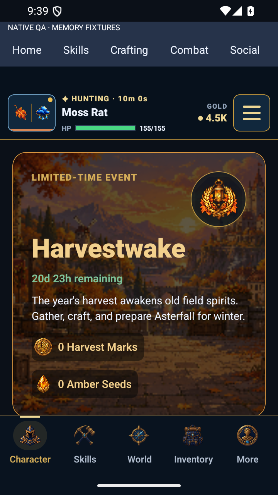
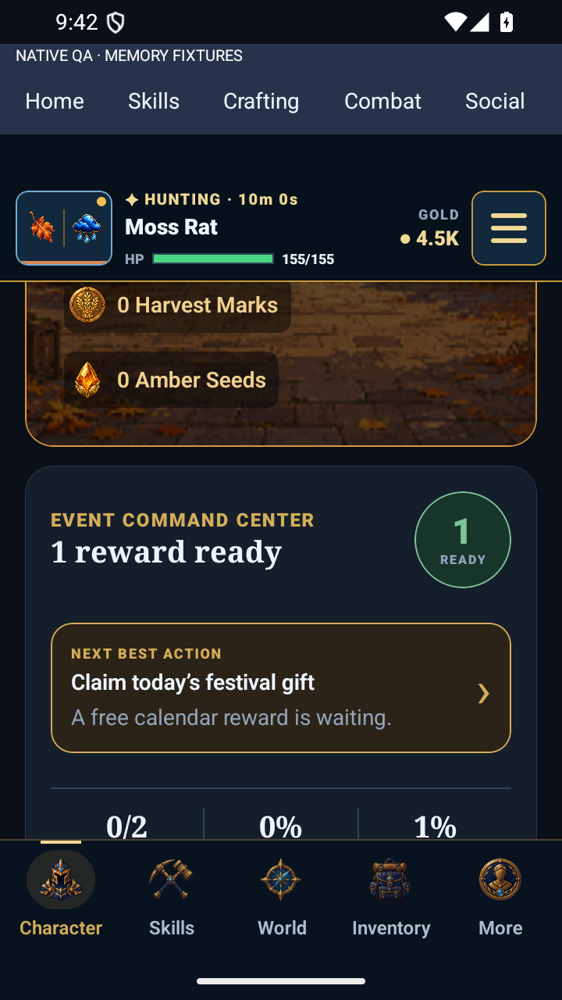
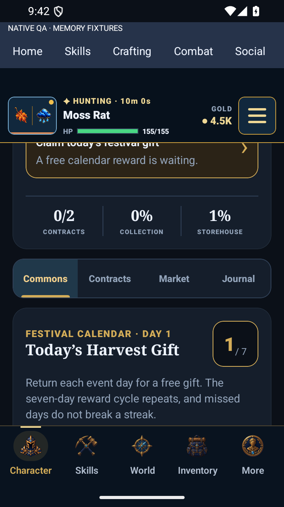

VELDRYN · Event identity
Harvestwake now carries its festival crest through the active-event hero, with a full-width title and refined section tabs. These are actual Android captures using memory-only event state.
Implementation and verification · Integration specification

Corrected event hero and currency wallet
Command center and next action
Selected Commons tab and festival calendar